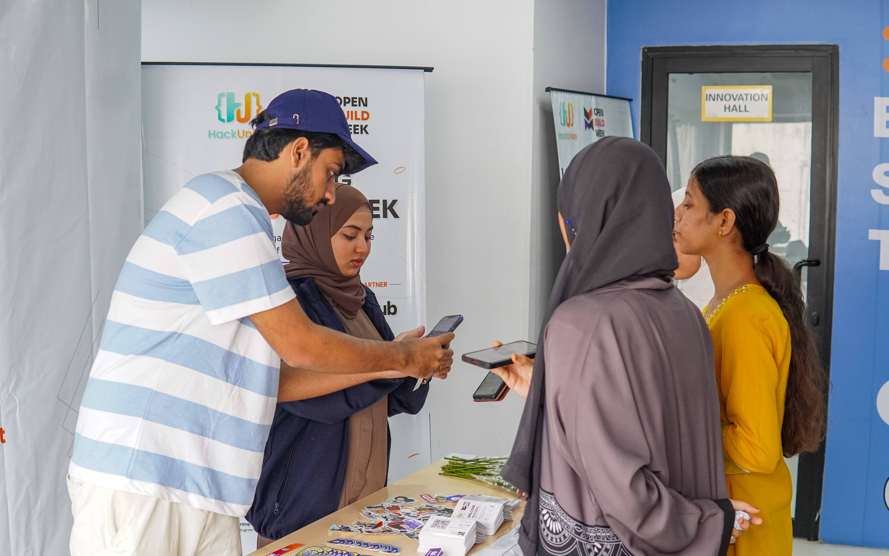

HackUnion Engineering Journal
Community
7 min read
HackUnion: A Community for People Who Build, Ship, and Share
There's a difference between a community where people watch technology happen and one where people make it happen. HackUnion is trying to be the second kind. Here's what that means in practice.

Most technology communities are built around consumption. You join a group, you follow updates, you attend a talk, you watch a demo, you scroll a feed of announcements. That’s not a criticism - a lot of useful learning happens that way. But it’s a passive relationship with technology. You’re informed. You’re rarely involved.
HackUnion starts from a different premise: that people learn technology best by making things with it, not just reading or hearing about it. That’s the entire idea behind the phrase we use most - Build. Learn. Share. Connect. It’s not a slogan so much as a description of the order things actually happen in when a community works.
Why a Builder-First Community Needs to Exist
There’s no shortage of places to learn about technology. There are more tutorials, courses, newsletters, and conference talks available right now than any one person could get through in a lifetime. What’s harder to find is a place where you’re expected to actually do something with what you’re learning - where the group around you is oriented toward shipping, not just discussing.
That gap is what a builder-first community is meant to close. It’s less about information and more about environment. The right event, the right group of people, or the right deadline can push someone from “I’ve been meaning to learn this” to “I built a working version of this in a weekend.” That shift rarely happens by accident. It happens because the environment around a person makes building feel normal, expected, and supported.
Who HackUnion Is For
This is probably the most misunderstood part of any builder community: the word “builder” gets read as shorthand for “professional software engineer,” and that’s too narrow.
A builder, in the way we use the term, is anyone who is actively making something with technology - regardless of title, experience level, or polish. That includes:
- a student writing their first project, even if it’s rough and small
- a developer experimenting with AI tools they haven’t used professionally
- a designer prototyping an interface, not just a coder shipping a backend
- someone making their first open-source contribution, even a small one
- a founder testing whether an idea actually works before committing to it
- someone learning a new skill by making something imperfect with it
- a person organizing others around a technology topic, even if they don’t write code themselves
What connects all of these isn’t skill level. It’s posture. A builder is someone choosing to participate rather than only observe. Someone who’s willing to make something incomplete, put it in front of others, and improve it - instead of waiting until they feel “ready enough” to start.
That’s an important distinction, because a lot of people rule themselves out of communities like this before they even try, assuming it’s only for people who already know what they’re doing. It isn’t. Some of the most useful moments in any builder community come from people who are visibly still figuring things out.
Why Building Matters More Than Attending
There’s a real difference between a community where people primarily attend things and one where people primarily participate in things.
An audience learns by watching. A community of builders learns by doing, and then explaining what they did to someone else - which turns out to be one of the fastest ways to actually understand something. Attending a talk on a new framework might give you a rough mental model. Trying to use that framework to build something small, hitting the parts that don’t work as expected, and asking someone nearby why - that teaches you something more durable.
This is also why hackathons, workshops, and hands-on sessions sit at the center of how HackUnion operates, rather than passive lecture-style events. The goal isn’t to minimize learning from others - mentors, speakers, and industry professionals are a real part of this - it’s to make sure that learning is paired with actually doing something, not just hearing about it.
What Build, Learn, Share, Connect Looks Like in Practice
Each part of that phrase maps to something concrete:
Build - hands-on work. A project at a hackathon, an experiment during a workshop, a first pull request to an open-source repository, a prototype tested during OpenBuild Week. The emphasis is on making something real, even if it’s small or unfinished.
Learn - the technical and practical knowledge that comes from doing the work, plus what’s shared by people who’ve already been through it: developers, mentors, speakers, and industry professionals who show up not to lecture, but to explain how they actually think through problems.
Share - putting work in front of other people. Demoing an unfinished project. Writing up what broke and what you learned. Talking through a decision with someone who sees it differently. Sharing is what turns an individual’s experience into something the wider community can learn from too.
Connect - the relationships that form around doing this together. Students meeting developers. Developers meeting industry professionals. People from completely different backgrounds ending up on the same project because they were in the same room, working on the same kind of problem.
None of these stand alone particularly well. Building without sharing stays private and doesn’t compound. Learning without building stays theoretical. Connecting without any of the above is just networking. Put together, they describe a fairly ordinary cycle - one that mirrors how people actually get better at making things, inside or outside any formal community.
How the Different Formats Fit Together
HackUnion’s activities - hackathons, campus programs, workshops, developer events, OpenBuild Week, GitHub Copilot Dev Days, open-source initiatives - aren’t separate initiatives so much as different entry points into the same cycle.
A hackathon compresses building into a short, intense window. A workshop slows things down to focus on a specific skill. Campus programs bring the community to where students already are, rather than expecting students to find their way to it. Open-source initiatives give people a way to contribute to something ongoing, rather than something that ends when the weekend does. Developer-focused events, like Copilot Dev Days, give practitioners space to go deeper on tools they’re already using in real work.
Different formats suit different people at different points in their journey. Someone brand new to building might start with a workshop. Someone with a working project might be more interested in a hackathon or an open-source contribution. What ties it together is the same underlying idea: give people a reason and a structure to build something, not just attend something.
Why Connecting Students and Industry Professionals Matters
A lot of what students learn about “how the industry actually works” comes secondhand - from articles, forum posts, or assumptions. Direct interaction with developers and industry professionals tends to correct a lot of that faster than any amount of reading does. It’s also useful in the other direction: professionals get exposure to how newer builders are approaching problems, often with fewer assumptions about how things “should” be done.
This kind of interaction doesn’t need to be formal or hierarchical. Some of the most useful exchanges happen informally - during a hackathon, over a shared debugging problem, in a hallway conversation after a workshop - not necessarily in a structured mentorship program.
Why Open Source Matters Here
Open source is one of the clearest examples of what building in public actually looks like. It’s collaborative by default, transparent by default, and it rewards people who show up and contribute - regardless of where they are in their career. For someone early on, it’s often the first place they get real feedback on code from people outside their own class or team. For more experienced builders, it’s a way to keep contributing to something bigger than a single job or project.
It fits naturally into a builder-first community because it’s built on the same premise: participation over consumption.
What We Want Someone to Experience
Ideally, someone who spends time in HackUnion walks away having built something they wouldn’t have built alone, learned something they wouldn’t have picked up passively, shared work they weren’t fully confident about yet, and connected with people they wouldn’t have otherwise met - students, developers, designers, mentors, professionals, all somewhere on the same general path of making things with technology.
That’s a reasonable, honest goal. It doesn’t require exaggeration to be worth pursuing.
HackUnion Is Not Finished
It’s worth saying plainly: HackUnion is not a finished product being delivered to a community. It’s a community being built, actively, by the people who show up to it - the students trying something for the first time, the developers experimenting outside their day jobs, the designers, the open-source contributors, the mentors, the professionals willing to spend an evening explaining how they think.
The shape of it right now reflects who has participated so far. What it becomes next depends on who builds, learns, shares, and connects here going forward.